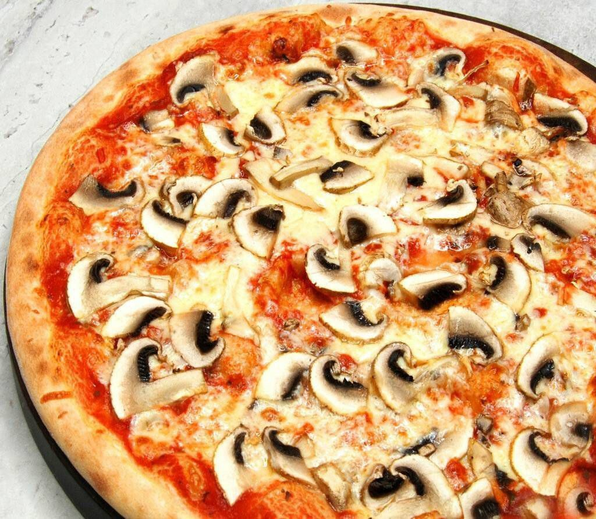

Грибная пицца
Ингредиенты
- тесто для пиццы — 230 граммов.
- лесные варёные грибы — 250 граммов.
- репчатый лук — 200 граммов.
- томатный соус — 3 столовые ложки.
- растительное масло — 2 столовые ложки.
- сыр российский — 50 граммов.
Шаги
- Налить в сковороду рафинированное растительное масло, положить туда же варёные лесные грибы, измельчённый кубиком очищенный лук и жарить всё на среднем огне до румяного состояния.
- Натереть сыр.
- Включить духовку на 190 градусов.
- Стол немного присыпать мукой и выложить на него тесто.
- Руки также припылить мукой и растянуть тесто в тонкий круглый пласт.
- Переложить заготовку (толщина не более 3–5 мм) на противень, застеленный пергаментом и немного присыпанный мукой.
- Смазать томатным соусом, равномерно разложить грибы с луком.
- Присыпать всё тёртым сыром и отправить в духовку на 15 минут.
- Подавать грибную пиццу горячей.
На главном меню